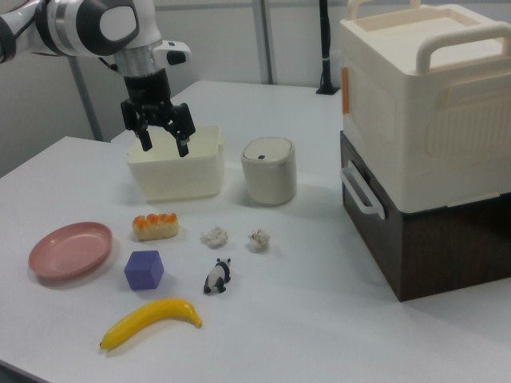

RoboMIND · franka_3rgb__place_in_bread_in_plate/1014_101050
Place in bread in plate

Annotation
From the dedicated visual review of this video (concise_action_v1). Plain text · JSON
Observed outcome
- Status
visually_completed
- Description
The arm grasps the orange-topped bread loaf (gripper closing frames 59-70), lifts it, carries it left and lowers it onto the pink plate, opens the gripper (frames 93-99) and withdraws. From frame 98 onward the loaf is visibly resting on the plate, slightly tilted, and stays there to frame 134.
Hand roles
- Active visible arm
Single arm picks up the bread loaf, carries it to the pink plate, places and releases it, and withdraws.
- Other arm
None.
Coordination
Single arm acts alone. A human hand appears briefly at the lower left (frames 13-24) only to reposition the banana, before the robot moves; there is no human-robot interaction.
Robot-side evidence
- Visible description
Single Franka Emika Panda arm with a parallel-jaw gripper; the arm base is off-frame to image left and the arm enters from the left edge in the camera_right view. Only one arm exists.
- Source annotation
Publisher instruction: 'put the bread on a plate'.
- Visual certainty
Not a humanoid; left/right anatomy is not needed. The usable prompt refers to the single robotic arm.
Chronology
| Frames | Observation |
|---|---|
| 0–12 | Arm held above the open white storage bin with gripper open and pointing down; toy bread loaf with orange top, pink plate, purple cube, two white crumpled items, a panda figurine and a banana lie on the table; stacked cabinet at right. Scene static. |
| 13–24 | A human hand and forearm enter from the lower left edge, reach to the banana at about frames 14-16, adjust it and withdraw by about frame 22; the banana ends nearer the panda figurine and the blue cube. The robot stays still. |
| 25–38 | Banana and panda settle (panda leans on the banana). Arm still hovers over the bin; it begins to move toward the bread around frame 36-38. |
| 39–52 | Arm swings left-forward and down toward the bread loaf, gripper still open (gripper telemetry 0.0), blue wrist light visible from about frame 44; fingers straddle the loaf at frame 52. |
| 53–62 | Gripper lowered around the bread loaf; telemetry gripper value starts rising from frame 59 (0.02) and reaches 0.13 at frame 62, fingers closing on the loaf. |
| 63–74 | Fingers close on the loaf (telemetry about 0.74-0.75 from frame 70, which is the closed-on-object value) and the loaf is held at the grasp; loaf still at original table position at frame 70. |
| 75–86 | Loaf lifted off the table and carried left toward the pink plate; at frame 86 the held loaf is over the plate rim. |
| 87–98 | Arm lowers the loaf onto the plate; telemetry gripper value falls 0.6 to 0.06 over frames 93-98 and reaches 0.0 at frame 99 as the fingers release. At frame 98 the loaf lies on the plate with the open fingers beside it. |
| 99–108 | Gripper open (0.0) and lifts clear of the plate, moving up and to image right; the loaf rests on the plate, slightly tilted, and stays in place (frame 104 and 110 at native resolution). |
| 109–134 | Arm withdraws up and back toward its starting pose above the white bin with gripper open; bread remains on the pink plate through the last frame 134. Banana, panda, cube unchanged. |
Clip selection
The episode is one single-task manipulation (pick the bread loaf, place it on the plate, release, withdraw). There is no later independent subtask, so the complete clip is retained and no shortened branch or full-sequence prompt is needed. The brief human hand adjusting the banana at frames 13-24 precedes the robot motion and is not a robot subtask.
Differences from the publisher annotation
- The publisher instruction 'put the bread on a plate' matches the video; the prompt only adds the visible detail that the loaf has an orange top and the plate is pink.
- The brief human hand in frames 13-24 adjusting the banana is not mentioned in the instruction and is excluded from the prompt.
Uncertainties
- The bread is a toy-like loaf with an orange glazed top (possibly a toy sushi/bread roll); the prompt uses an appearance-based description 'small orange-topped bread loaf' and the publisher word 'bread'.
- Fine finger-to-object contact points are not resolvable at 640x480; the grasp is inferred from the gripper telemetry rising to about 0.75 while the loaf moves with the gripper (higher value = more closed, inferred from video).
- The exact frame of release is taken from telemetry (value 0.0 at frame 99) and the loaf already lying on the plate at frame 98.
- FPS is not recorded in the source; frame indices are authoritative, not time.
Complete review record action_review.json
{
"prompt_protocol": "concise_action_v1",
"prompt_provenance": "visually_authored_from_video_and_initial_frame",
"dataset": "x-humanoid-robomind/RoboMIND",
"task": "place_in_bread_in_plate",
"episode_id": "1014_101050",
"embodiment": "franka_3rgb",
"generation_camera": "camera_right",
"source_video": "../../original/data/trajectory.hdf5",
"source_frame_count": 135,
"source_resolution": [
640,
480
],
"source_fps": null,
"source_fps_note": "FPS is not recorded in the source HDF5; 30 FPS is only a nominal playback rate, so no real-time durations are claimed.",
"selected_source_frame_start": 0,
"selected_source_frame_end_exclusive": 135,
"selected_frame_count": 135,
"selection_reason": "The episode is one single-task manipulation (pick the bread loaf, place it on the plate, release, withdraw). There is no later independent subtask, so the complete clip is retained and no shortened branch or full-sequence prompt is needed. The brief human hand adjusting the banana at frames 13-24 precedes the robot motion and is not a robot subtask.",
"usable_prompt": "The robotic arm picks up the small orange-topped bread loaf and places it on the pink plate, releasing it so it rests on the plate. Keep the camera fixed; preserve robot geometry, physically valid joint motion, and normal gripper opening and closing.",
"full_sequence_prompt": null,
"selected_action_outcome": {
"status": "visually_completed",
"description": "The arm grasps the orange-topped bread loaf (gripper closing frames 59-70), lifts it, carries it left and lowers it onto the pink plate, opens the gripper (frames 93-99) and withdraws. From frame 98 onward the loaf is visibly resting on the plate, slightly tilted, and stays there to frame 134."
},
"source_overall_outcome": {
"status": "visually_completed",
"source_quality_label": null,
"description": "Same as the selected action: the bread ends on the pink plate and the arm returns toward its start pose by frame 134. No success/failure label is stored in the source files reviewed."
},
"anatomical_side_evidence": {
"visible_description": "Single Franka Emika Panda arm with a parallel-jaw gripper; the arm base is off-frame to image left and the arm enters from the left edge in the camera_right view. Only one arm exists.",
"source_annotation": "Publisher instruction: 'put the bread on a plate'.",
"visual_certainty": "Not a humanoid; left/right anatomy is not needed. The usable prompt refers to the single robotic arm."
},
"arm_roles": {
"active_visible_arm": "Single arm picks up the bread loaf, carries it to the pink plate, places and releases it, and withdraws.",
"other_arm": "None."
},
"coordination": "Single arm acts alone. A human hand appears briefly at the lower left (frames 13-24) only to reposition the banana, before the robot moves; there is no human-robot interaction.",
"chronology": [
{
"source_frames_inclusive": [
0,
12
],
"observation": "Arm held above the open white storage bin with gripper open and pointing down; toy bread loaf with orange top, pink plate, purple cube, two white crumpled items, a panda figurine and a banana lie on the table; stacked cabinet at right. Scene static."
},
{
"source_frames_inclusive": [
13,
24
],
"observation": "A human hand and forearm enter from the lower left edge, reach to the banana at about frames 14-16, adjust it and withdraw by about frame 22; the banana ends nearer the panda figurine and the blue cube. The robot stays still."
},
{
"source_frames_inclusive": [
25,
38
],
"observation": "Banana and panda settle (panda leans on the banana). Arm still hovers over the bin; it begins to move toward the bread around frame 36-38."
},
{
"source_frames_inclusive": [
39,
52
],
"observation": "Arm swings left-forward and down toward the bread loaf, gripper still open (gripper telemetry 0.0), blue wrist light visible from about frame 44; fingers straddle the loaf at frame 52."
},
{
"source_frames_inclusive": [
53,
62
],
"observation": "Gripper lowered around the bread loaf; telemetry gripper value starts rising from frame 59 (0.02) and reaches 0.13 at frame 62, fingers closing on the loaf."
},
{
"source_frames_inclusive": [
63,
74
],
"observation": "Fingers close on the loaf (telemetry about 0.74-0.75 from frame 70, which is the closed-on-object value) and the loaf is held at the grasp; loaf still at original table position at frame 70."
},
{
"source_frames_inclusive": [
75,
86
],
"observation": "Loaf lifted off the table and carried left toward the pink plate; at frame 86 the held loaf is over the plate rim."
},
{
"source_frames_inclusive": [
87,
98
],
"observation": "Arm lowers the loaf onto the plate; telemetry gripper value falls 0.6 to 0.06 over frames 93-98 and reaches 0.0 at frame 99 as the fingers release. At frame 98 the loaf lies on the plate with the open fingers beside it."
},
{
"source_frames_inclusive": [
99,
108
],
"observation": "Gripper open (0.0) and lifts clear of the plate, moving up and to image right; the loaf rests on the plate, slightly tilted, and stays in place (frame 104 and 110 at native resolution)."
},
{
"source_frames_inclusive": [
109,
134
],
"observation": "Arm withdraws up and back toward its starting pose above the white bin with gripper open; bread remains on the pink plate through the last frame 134. Banana, panda, cube unchanged."
}
],
"uncertainties": [
"The bread is a toy-like loaf with an orange glazed top (possibly a toy sushi/bread roll); the prompt uses an appearance-based description 'small orange-topped bread loaf' and the publisher word 'bread'.",
"Fine finger-to-object contact points are not resolvable at 640x480; the grasp is inferred from the gripper telemetry rising to about 0.75 while the loaf moves with the gripper (higher value = more closed, inferred from video).",
"The exact frame of release is taken from telemetry (value 0.0 at frame 99) and the loaf already lying on the plate at frame 98.",
"FPS is not recorded in the source; frame indices are authoritative, not time."
],
"source_annotation_discrepancies": [
"The publisher instruction 'put the bread on a plate' matches the video; the prompt only adds the visible detail that the loaf has an orange top and the plate is pink.",
"The brief human hand in frames 13-24 adjusting the banana is not mentioned in the instruction and is excluded from the prompt."
],
"inspection_coverage": {
"entire_sequence_reviewed": true,
"sampled_decoded_frame_indices": [
0,
2,
4,
6,
8,
10,
12,
14,
16,
18,
20,
22,
24,
26,
28,
30,
32,
34,
36,
38,
40,
42,
44,
46,
48,
50,
52,
54,
56,
58,
60,
62,
64,
66,
68,
70,
72,
74,
76,
78,
80,
82,
84,
86,
88,
90,
92,
94,
96,
98,
100,
102,
104,
106,
108,
110,
112,
114,
116,
118,
120,
122,
124,
126,
128,
130,
132,
134
],
"sampling_method": "Every second stored frame of camera_right (frames 0-134) in sequential temporary contact sheets covering the whole 135-frame source, plus native-resolution frames at the contact and release transitions.",
"native_resolution_frame_indices": [
0,
14,
16,
24,
52,
62,
70,
86,
98,
104,
110,
134
],
"conditioning_png_inspected_after_sequence": true,
"conditioning_png": "../first_frame.png",
"temporary_evidence_location": "/tmp/rv_review/robomind_1014_101050 (not a dataset artifact)",
"ancillary_camera_videos_used": false,
"telemetry_used": "puppet/joint_position gripper column (index 7) at every frame from 55-109 and every 10 frames overall as supporting evidence only."
},
"evidence_frame_indices": [
0,
14,
16,
24,
52,
62,
70,
86,
98,
104,
110,
134
],
"review_completed_at": "2026-10-15T20:05:51Z",
"dedicated_review_agent": "review_robomind_1014_101050",
"generation_reference_validation": {
"source_frame_start": 0,
"source_frame_end_exclusive": 135,
"frame_count": 135,
"lossless_source_frame_correspondence_passed": true,
"original_source_hdf5_retained_unchanged": true
}
}